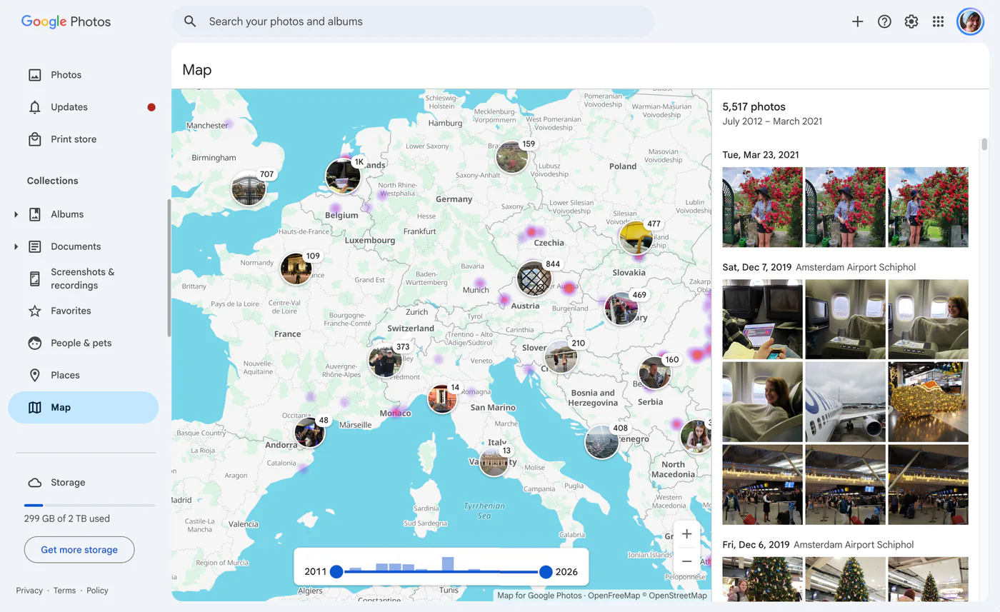
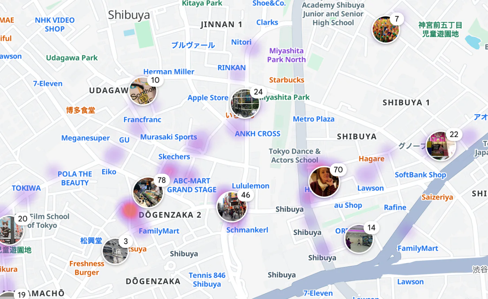
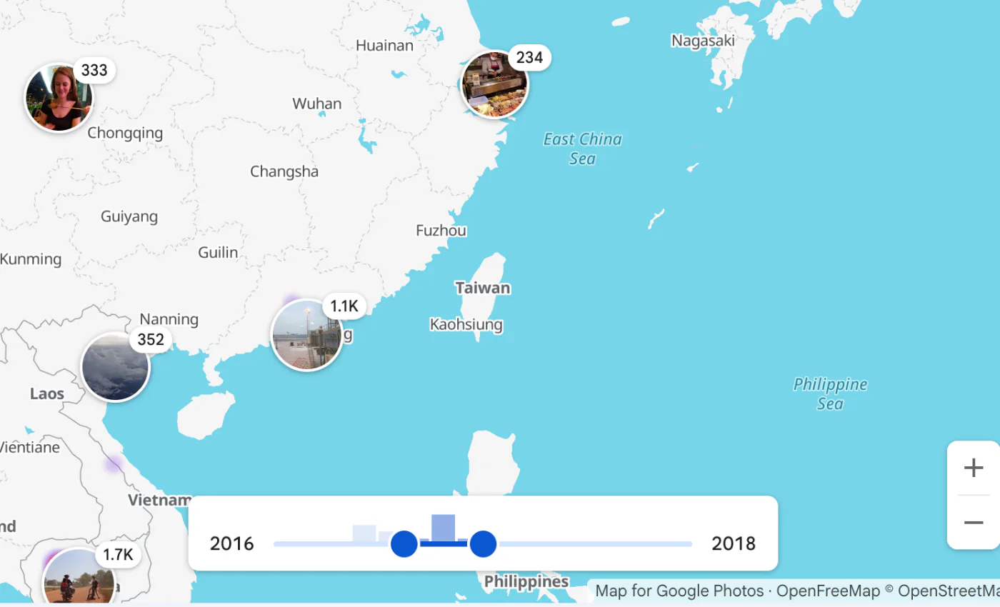
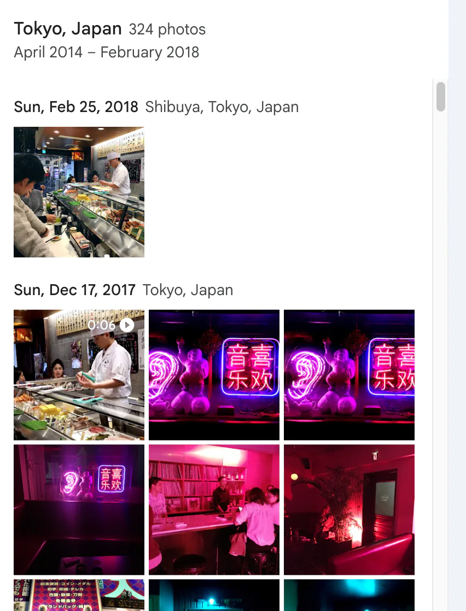

Your photos, where you took them
Google Photos has a map on your phone but not on the web. This free Chrome extension adds it.


Zoom from the world to the street. Bubbles show what you shot in each place, and the heat shows where you shot the most.

Drag through the years. Narrow the map to one trip or one decade. The bars show your busiest years.

Every photo in view, by day. Click one to open it in Google Photos. Close it and you're back in the same spot on the map.
Your photo locations stay on your computer. There's no server and no account. Map tiles come from OpenFreeMap, which sees the areas you look at.